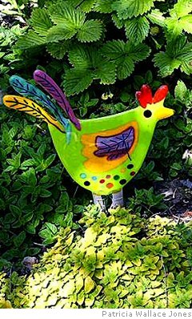

Dave McClure
Posterity
We could be happy now and, if you are,
I hope my tangled ramble will not spoil
a perfect day. I have no wish to mar
your mardi gras or to disturb your oil
with troubled water, nor to bring you pain.
The opening took so long I’ll start again.
We could be happy now, as birds of air
(which ones? the happy ones of course) but there
is something evil holding us in thrall -
Posterity — the notion drives us spare,
as if the future cared for us at all.
Instead of stepping out to travel far
and wide, we hide inside to sweat and toil
on some dull masterpiece, apply the tar
and feathers to our own behinds. We boil
our brains in brine, the better to attain
the unattainable, the merest grain
of immortality. We claw and tear
at trivia and pray that we may fare
better than all our fellows. To stand tall
among the greats, to shine without compare,
as if the future cared for us at all.
No need to play the precious superstar.
Sufficient to be diligent and loyal
in service of the muse. Avoid the bar
at least till one o’clock and show a royal
displeasure verging on a fine disdain
to anyone who asks us to explain
our antisocial tendencies. Beware
of all who interfere. A rabid bear
with toothache is a model sure to stall
the curious; or freeze them with a glare,
as if the future cared for us at all.
And everywhere from Ayr to Zanzibar
a hell of fellow scriveners embroil
the waking hours in faking on a par
with Stevenson or even Roddy Doyle.
A form of madness favoured by the vain,
this writer’s clamp, the stamp of the insane
and insecure. Poor fools who never dare
to do, we step aside and idly stare
at braver players fighting for the ball,
call it “research” and pack it neat and square
as if the future cared for us at all.
Take Valient-for-Truth: each mark and scar
bore witness to his time above the soil,
but who will value scratches on the car
as evidence of valour? We recoil
too late from recognising that the main
thrust of our lives was gazing at the rain
and sitting, sitting, sitting in a rare
resemblance of a scrawny Rodin, bare
bulb overhead, in front of us a scrawl
of doomed ambition, martyrs to a chair,
as if the future cared for us at all.
Posterity, you ought to have a care.
You’re irresponsible, for everywhere
in every age you lead to our downfall.
We banish happiness, embrace despair,
as if the future cared for us at all.
Helga’s Chickens
Helga’s Chickens take the floor
around eight thirty every night.
Could anybody ask for more?
Perhaps some spotty troglodyte
would rather hide away and write
computer code, but what a bore
and hardly likely to delight
Helga’s Chickens. Take the floor
for instance — even if it wore
a carpet of a lurid white
our eyes would still be on the door
around eight thirty. Every night
the Paranormal’s heaving. Quite
a crowd prepares for what’s in store
and brightens as they dim the light.
Could anybody ask for more
than Helga and her brood? Before
you rush to call her “parasite”
or breathe the appellation “whore”,
perhaps some spotty troglodyte
will rush to her defence and cite
an evening back in ’94
when he succumbed, gave up the fight
and sang “O come let us adore
Helga’s Chickens!”
The Paranormal Hotel
(Excerpts from the eponymous blog, by Paraglider)
The Paranormal Hotel, Dubai, with its notorious Chalky’s Bar, is an institution and a UAE phenomenon. Sadly, it can’t last much longer in its present form and, once gone, it could never be replaced. A new Panorama might rise, Phoenix like, from the ashes, but the Paranormal will be no more. And what will then become of Helga’s Chickens?
Without Prejudice
Paraglider was still musing on how long it had taken the ants (near the cash point) to rebuild their walkway after the last sandstorm, as he stepped from the sunshine into the Paranormal, then sharp left into Chalky’s, darkness and temporary blindness. For the unwary, this is a dangerous two minutes and it’s best not to speak till the eyes recover. From somewhere on the left — Me, I come from the US, Doll. Pennsylvania. Ever heard of it? Clearly a Broadcaster. From somewhere closer — Hello, what you name? From straight ahead — Sir? (a welcome voice). — Pint of Stella, please. And as the fog lifts, the Broadcaster is seen to be wearing shorts and hiking boots with socks, and has started shouting about camel toes. Beam me up, Scottie.
A Taste of the Dark
Eric’s dance was a long time coming. Maybe half a dozen double whiskies and fourteen tentative approaches from all nations East of Turkey. He seemed impervious, even to the wiles of Kyrgyz Carina who retired gracefully, knowing herself rebuffed, albeit in barely comprehensible slurred County. Enter Stella from Eritrea, beaming her beam as only she can. Eric’s dance began, all elbows, knees and wire-rimmed glasses. Snake-charmer par excellence, you’d almost think he didn’t know he didn’t have to try. From her corner stool, Carina said something like “Blyatt!”
Your Feet’s Too Big
There’s good posture, and there’s presence. Anna has both, especially the latter. And eyes. Eyes that don’t so much look as inhale. Rather like the old Superman comics: Aside — With my X-ray vision, I can see that he’s carrying a ray-gun in his haversack. It turns out (since you have no option but to talk to her) that her father was in the KGB and doesn’t know she’s in Dubai. Which says a lot for intelligence. And that she was an aspiring ballet dancer with a wodge of potential until, sadly, her feet grew too big. Well, they’re not huge, but, looking down, her story is certainly believable. Still, you might think there would be some happy medium between stardom and the Para. Maybe some modern dance troupe with progressive attitudes towards feet? Apparently not. So it’s good to know that the Paranormal is there, rather like a donkey sanctuary, for ballerinas in free-fall.
When Don Quixote met Ella Gow...
The talk soon came around to dancing. His pantaloons were incongruous but, in her green drndl hand-me-down, she herself was scarcely a model of elegance. None of which seemed to matter as, seamlessly, they moved from talk to practice. Well, more of a lesson, if truth be told, as Ella, till now, had only read of the Pavane. The Don’s grace and courtly manners were matched only by her guileless acquiescence and, perhaps, by the vacuous stares of the seven attendant Livingstone Daisies, resplendent in their black neckerchiefs and white lace petticoats. There were none to mock, for it was Tuesday, and barely dark.
— from Paraplexed
Dave McClure had written sporadically all his life, but became hooked about ten years ago when he started contributing to a number of on-line forums and workshops. He writes in English and modern Scots, mostly in form, and with no particular life theme, preferring to ring the changes in subject matter and style. If he ever “finds his voice” it’ll be time to stop. He is currently living and working in the Middle East where there is plenty of raw material for his taste for the surreal. A lot of his poems end up here.
|